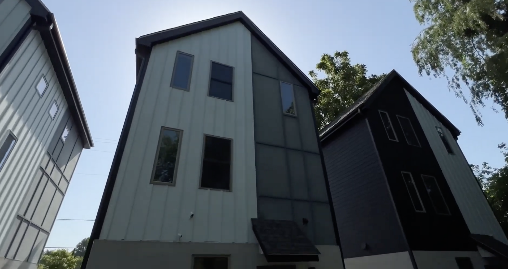

Another Round of Gentrification Confusion
November 5, 2025
This member commentary post does not necessarily reflect the views of Asheville For All or its members.
Gentrification is in the news again, this time in a big Asheville Watchdog article.
And as is par for the course for Asheville, people are throwing around the word without really understanding what it is, confusing its causes and effects, and conflating it with displacement, while not understanding the causes and effects of that!
Here’s a brief comment on what Asheville gets wrong when we talk about gentrification and displacement, in the form of some references to different sources that I’ve found helpful in thinking more critically about this subject.
First, I want to be very clear: my purpose in questioning some of the assumptions presented in the Watchdog article is not to downplay the importance of considering displacement in determining policy. Rather, my intent is to show how those assumptions, which by no means have their beginnings in Asheville, can obscure the real solutions that we have available to increase housing stability for all kinds of Asheville residents.
Jenny Schuetz on “Late Stage Gentrification”
The claim at the core of this week’s Asheville Watchdog article is that new housing construction causes rising property taxes, which fuels gentrification.
It’s theoretically quite possible, I suppose, that all else being equal, in a highly constrained land market, that the presence of some new homes might signal to buyers, realtors, and developers that are happening through the neighborhood that this is a place worth checking out. But the research on this subject suggests that this common sense observation gets some things wrong.
A rise in property taxes on an existing home is driven by higher land valuation. (After all, the structure of the house itself hasn’t changed.) And housing policy analysts generally agree that high land values attract development, rather than development raising land values. The causation, in other words, is backwards. By the time that someone wants to spend a lot of time and money building a set of homes on Burton Street, that land must have already risen in value enough to make such a development make sense.
And what causes rising land value for residentially zoned land? Housing demand.
Jenny Schuetz, a Senior Fellow policy analyst at Brookings, makes a case in an interview with Ezra Klein for identifying “late-stage gentrification” as the moment when people, especially homeowners, suddenly get concerned:
. . . I should say that this is a tough area to reconcile people’s lived experience if you’ve been in a neighborhood that’s going through this process with what we know from the academic research, particularly by economists. So I should say, first of all, that the perception of developer coming in, tearing down some old buildings, maybe some old apartments that are relatively cheap and replacing them with big, fancy, new apartments or condos that are expensive, that’s actually pretty late-stage gentrification.
By the time the developer wants to do new construction in your neighborhood, property values and rents have probably already been going up for a decade and you’ve already started to see a change in who lives in the neighborhood before it gets to that point. So the early stage gentrifiers tend to be somebody who buys an older, poor quality house, moves in, and renovates the house and lives in it. But that’s not nearly as visible as a giant new apartment building going up, right?
And developers don’t come in until after you’ve had a bunch of this rehab. So the forces are already there before people see something and start protesting. What we’ve seen from some of the recent academic literature is that in neighborhoods where you get big new construction projects, that actually helps keep the rents down. So the new construction comes in, that building is expensive, but the existing buildings in the neighborhood are cheaper because there’s now additional supply.
So this is — and we have a number of studies in different cities that look at this. But that’s a very hard, counterintuitive thing to say to somebody who lives in a neighborhood, where they’re seeing a big new property go up and they see that it’s more expensive than their home. And some of them will have their rents go up, right?
So it’s not that all rents in the neighborhood fall immediately with new construction. But on average, rents are slower or fall by more because there’s new construction relative to that same neighborhood if you didn’t allow any development to happen.
(By the way, if Ezra Klein rubs you the wrong way, I get it. Schuetz makes the same case in a very good interview with Adam Conover.)
Darrell Owens, on “The Look of Gentrification”
Darrell Owens, an analyst and activist in the Bay Area, makes a similar case in writing about the history of his own historically Black neighborhood.
As for my neighborhood, it had increased in Black residents consistently since World War 2. Then in 1975 the zoning was changed by the first gentrification wave of homeowners trying to stop dingbat apartments from “deteriorating the neighborhood” with added density. Despite accusations that their goal was to keep Black people out the neighborhood, the group won and it became virtually impossible to add housing there. The Black population subsequently dropped by 25% that decade, followed by a 15% drop during the 1980s, a 24% drop in the 1990s, a 30% drop in the 2000s and now a 14% drop in the 2010s. By the time subprime wiped out what was left of the Black community in the late 2000s, 50% had already been displaced in the decades prior for wealthier replacements.
Those who fought attempts to grow the housing capacity of our old neighborhood got what they wanted: all the same old houses, parks and stores. But at the expense of the people who had lived there in the first place by trading them for new arrivals. Population growth does not require displacement when you prioritize making space rather than the aesthetic of buildings.
Owens is a fantastic blogger and his archive is worth a deep dive. One of the things I think he is saying in this post is that in the sense that we all occupy space in a city, we are all “gentrifiers” in a way. We make up the demand. What he calls “first-wave gentrifiers” are often seen as heroes—the old-timers, those who resist change—and the more recent “gentrifiers” are painted as villains. So rather than point fingers at one another, the question when it comes to displacement is: how do we make space for others?

“Supply Skepticism Revisited”
A very comprehensive metastudy, “Supply Skepticism Revisited” surveys recent research on displacement and gentrification. It notes that these two words are not interchangeable, and that in fact gentrification without displacement may not necessarily be a bad thing. (It effectively means racial and/or class integration is happening.) The study echoes Schuetz’s observation that new construction follows demand, and not vice versa. And it cites other studies to show that displacement, if not gentrification, is less probable when new housing supply is being added.
(In my humble opinion, “Supply Skepticism Revisited” is a very academic report that actually reads very easily! It’s worth checking out in full.)
Kate Pennington and Xiaodi Li, on the “Amenity Effect”
The idea that new housing construction will raise demand—and therefore, land values and rents—because new homes look nice and expensive is sometimes considered as part of a bigger phenomenon called the “amenity effect.”
The amenity effect is likely much more pronounced when it comes to non-housing amenities, like a bike path or a new Whole Foods. As Darrell Owens suggests, the idea that this means poor neighborhoods should never get a bike path or a grocery store is terrible and self-defeating. But it is worth taking the amenity effect seriously. I think concern around the amenity effect, for example, is what animated opposition in Asheville to the “commercial corridor” changes mentioned in this week’s Watchdog article.
(I think it’s also what animated the rejection of the “Urban Center” designation for the old K-Mart site on Patton Ave. several years ago, which, had it been accepted, may have brought lots of walkable housing to West Asheville.)
As the meta-study above suggests, there’s good reason to believe that housing generally does not exacerbate the amenity effect, such as the evidence from two recent studies from Kate Pennington and Xiaodi Li.
These studies are both about rent. Could it be possible that rents would decrease, but property taxes would increase in the same neighborhood at the same time? Absolutely.
(Here I think a broader discussion of property taxes—why we need them, and how state tax policies already mitigate some of what people see as their downsides—might be warranted, but that’s another can of worms!)
But one thing is clear from all of the research from the last few years. To the extent that a housing-related amenity effect might rear its head in high-demand, high-restriction housing markets, the absolute best way to combat it is to apply pro-housing reforms broadly, and in doing so, include core, high-wealth, high-opportunity neighborhoods. This is what Asheville’s 2023 Missing Middle Housing Study and Displacement Risk Assessment calls for. And it’s what Asheville’s 2024 Affordable Housing Plan calls for too.
This broad approach is likely to keep both rents and land values down, especially compared to the alternative—what the city is doing now—of doing absolutely nothing. And doing nothing, remember, is the proximate cause of rising rents and rising property tax burdens on populations in Asheville that might be property-rich, cash-poor, and lacking options to downsize in place.
Further Reading
If I lost you at all above, here’s some more basic sources that make the connection between housing scarcity and gentrification and/or displacement:
- Jerusalem Demsas, “In Defense of the ‘Gentrification Building’” (YouTube)
- “Gentrification as a Housing Problem”
I’ll also share two recent writings of mine, here and here, in which I tried to use some specific terminology that describes displacement, terminology that came out of Asheville’s 2024 Affordable Housing Plan. If we’re going to talk about displacement, I think we’re going to have to be very specific about a) the mechanisms that displace people, and b) which of those mechanisms are plaguing Asheville right now.
This member commentary post does not necessarily reflect the views of Asheville For All or its members.